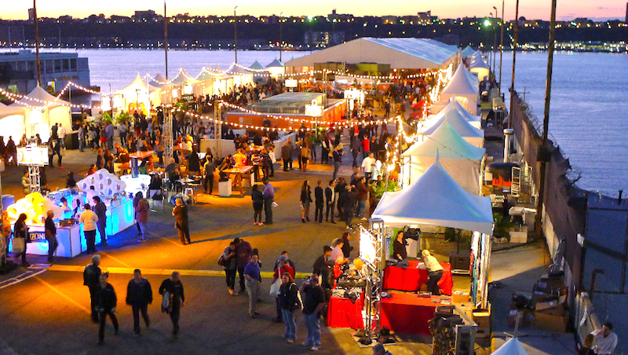
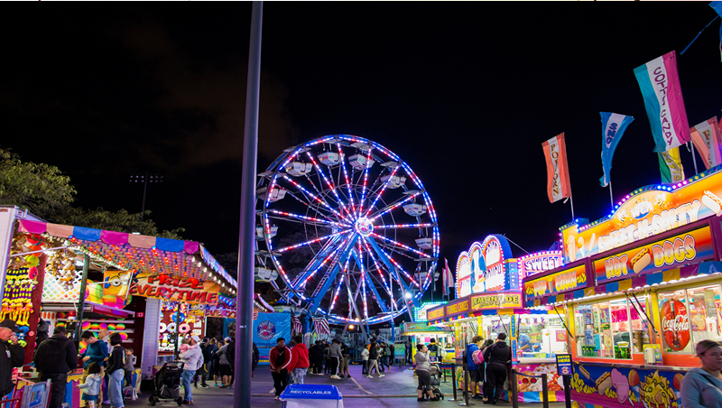

Sea Side Park Hotel Map
Sea side park is located in the heart of Sri Lanka’s capital city, in an affluent commercial area next to the Liberty Arcade. Our five-star hotel also offers a glimpse of the “Pola”, (Sri Lankan Market) across the road and the streets of Pettah, which presents a highly entertaining blend of sensory delights.
Just 10 minutes by car, is the national museum which was built in 1876. Bandaranaike International Airport (CMB) in Katunayake is 34 km away. With its colonial charm and sky rise buildings, Colombo was recently featured in The Economist as one of the fastest growing city destinations in the world.
Experiences at Sea Side Park Hotel
A vibrant fusion of old and new converges in Colombo, inspiring experiences aplenty for your stay in the city.
For a journey back in time, get lost in our island’s history and admire colonial-era architecture at the National Museum, Dutch Period Museum, Old City Hall, and Independence Memorial Hall. Our resident neighbourhood of Cinnamon Gardens and the central business district of Colombo Fort also serve as fantastic walks for any travellers, while the Old Parliament Building, Colombo Lighthouse, and Geoffrey Bawa House top off the lists of sights not to be missed here.
Religious excursions can also be arranged to sites of all faiths, each with their own stories to tell – including the Gangaramaya and Kelaniya Raja Maha Viharaya temples, the Captain Garden and New and Old Kathiresan kovils, the Jami-ul-Alfar mosque, as well as St. Lucia’s Cathedral, and St. Anthony’s and Wolvendaal Church.
Colombo also offers an abundance of shopping options including the harmoniously chaotic Pettah Market, or the more upscale Dutch Hospital Shopping Precinct and Arcade Indepence Square. International brands are also sold at a number of locations including ODEL, Majestic City, Liberty Plaza, and Crescat Boulevard, while local souvenirs are best sourced from Barefoot, Lakpahana and Laksala.
Finally for recreation, the Viharamahadevi Park serves as the green lung of the city, while Galle Face Green, Mount Lavinia and Wellawatte Beach offer coastal leisure. And for a game of golf, the historic Royal Colombo Golf Club is not too far away either.
Liberty Arcade shopping mall(2 minutes)
National Museum(10 minute drive)
Independence Square(10 minute drive)
Pettah Markets(10 minute drive)
Local Market(4 minutes drive)
Upcoming Festivals near Sea Side Park Hotel

Food Festival
English Language Teaching Unit (ELTU) of the SLIIT Faculty of Humanities and Sciences organized the food festival for the 4th consecutive year with the participation of 2020 Orientation students. This year the event was named as “Flavours – through East to West” as it presented the food lovers an unforgettable culinary experience. Professor Lalith Gamage, the Vice Chancellor and Professor Lakshman Ratnayake, the Chairman graced the event as chief guests.
The festival not only displayed togetherness but also it became a platform for the students to showcase their culinary talents, leadership qualities and creativity through their eco-friendly themed stalls. The event was a roaring success.

Holi Festival
English Language Teaching Unit (ELTU) of the SLIIT Faculty of Humanities and Sciences organized the food festival for the 4th consecutive year with the participation of 2020 Orientation students. This year the event was named as “Flavours – through East to West” as it presented the food lovers an unforgettable culinary experience. Professor Lalith Gamage, the Vice Chancellor and Professor Lakshman Ratnayake, the Chairman graced the event as chief guests.
The festival not only displayed togetherness but also it became a platform for the students to showcase their culinary talents, leadership qualities and creativity through their eco-friendly themed stalls. The event was a roaring success.
aa

Carnival
English Language Teaching Unit (ELTU) of the SLIIT Faculty of Humanities and Sciences organized the food festival for the 4th consecutive year with the participation of 2020 Orientation students. This year the event was named as “Flavours – through East to West” as it presented the food lovers an unforgettable culinary experience. Professor Lalith Gamage, the Vice Chancellor and Professor Lakshman Ratnayake, the Chairman graced the event as chief guests.
The festival not only displayed togetherness but also it became a platform for the students to showcase their culinary talents, leadership qualities and creativity through their eco-friendly themed stalls. The event was a roaring success.